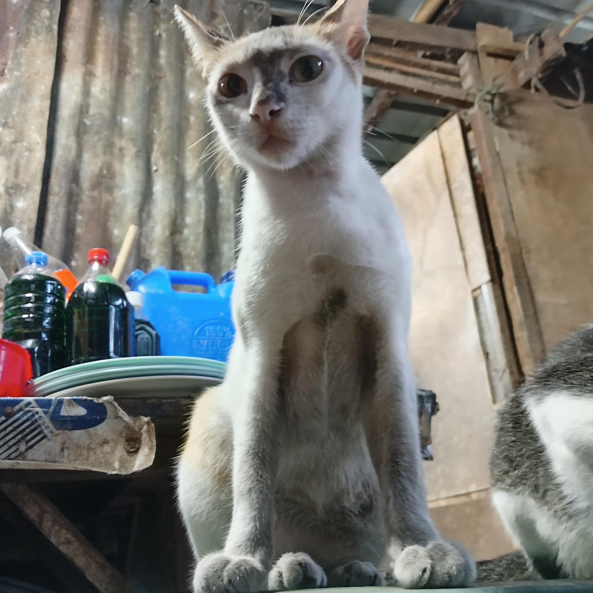

When I was child ~
I am a tiny but chubby human. I don't get to go outside our house that much.
As I were a sickly child and doesn't like to interact with people.
I live with my Mom, Dad, grandma and grandpa. Me and my cousin
often fight as she likes to remove my toys in the way that I have arranged them.
Yomi
#family
#LovedOnes
I am much closer to my mother's side of the family. But I am also closer to my grandma and grandpa in my father's side.
Both sides enjoy to communicate with me and tend to give advice to me.
I know that they love me but just shy to express their feelings as in our culture we are know to not show our true emotions.
Naomi
You can see that among these pictures I am in a different friend group.
This is because I don't really have friends to call on my own.
I tend to refuse making friends at school, I am closed-off.
Naomi
During my highschool years I start to make friends that I can call close friends.
Especially during my senior highschool years, those friends that I made are now my best friends.
Naomi
These are my friends, we are a total of 12 friends. We are 5 girls and 6 boys.
Stella-the mom, Brenn, Lady, Yannie, Naomi, Tatz, Topher, Gab, Marlo, Harvy, Jorell and Raf.
This circle of friends that I have started when we have to critique a restaurant as one of our
final projects in one of our subjects in Grade 11. And the history goes on. I totally appreciate all
of them as they are one of the standing pillars in my life journey.
Naomi
These are my friends, we are a total of 12 friends. We are 5 girls and 6 boys.
Stella-the mom, Brenn, Lady, Yannie, Naomi, Tatz, Topher, Gab, Marlo, Harvy, Jorell and Raf.
(this is Brenn and Lady)
Naomi
This is Stella, she doesn't like to sugarcoat her words. She's kind knows how to fight for her rights.
ps. she threatened me to add her here
Naomi
This is Yannie, she's soft spoken. She's the type of person that is a night owl that's why she's always sleepy
or lutang during the day(not always).
Yomi
We have a total of 14 cats, currently. Most of them were rescued and some were given to us. Others comes to our house.
Among these four cats Mimi(upper left), is given to us as her previous owners claims that she was blind.
Mimo and Levi were brothers, Papa found them along the highway. Oreo or O-chan was also rescued in the corn fields near our home.

Yomi
All of the cats here in this post, just one day appeared near our house and eventually we got to keep them.
They are all shy to people maybe they were absused before but as time passes by they became warm to us.
Sadly, Vonnie(upper left) died in a hit and run accident in front of our house. The rest of the cats here
are named Kyro,Kyra and Potpot.
Yomi
Blake or Blakey (upper left), is given to us from Sto. Tomas,Batangas. He is a Batangueño. He
likes to mark our house with his pee as a sign that our house was his territory. He is a monotone
siamese cat. Presto or Pesto-chan was the child of O-Chan (family of biscuits). Penny is a scottishfold
cat, she just showed up in our backyard. Rebisco or Biski (not a child of O-chan) was found and rescued
by our cousin.
Yomi
The cats shown here were the newest addition to our family. (Left) Cloud she's given by our neighboor
that is a breeder. They said Cloud was a persian or a siamese cat. The last one is Cream, she is one of
the twins of Mimi, her twin Lava, was given to our neighboor.
 on X.jpeg)